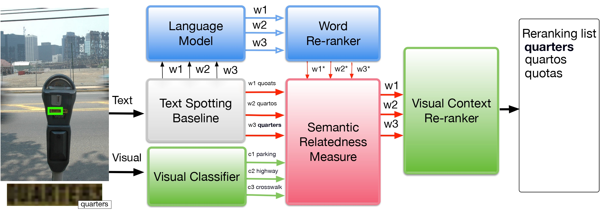

Visual Re-ranking with Natural Language Understanding for Text Spotting |
| Ahmed Sabir1, Francesc Moreno-Noguer2, Lluís Padró1 |
| Universitat Politècnica de Catalunya, TALP Research Center1 |
| Institut de Robòtica i Informàtica Industrial, CSIC-UPC2 |

|
|
|
|
Many scene text recognition approaches are based on purely visual information and ignore the semantic relation between scene andtext. In this paper, we tackle this problem from natural language processing perspective to fill the gap between language and vision. We propose a post-processing approach to improve scene text recognition accuracy byusing occurrence probabilities of words (unigram language model), and the semantic correlation between scene and text. For this, we initially rely on an off-the-shelf deep neural network, already trained with large amount of data, which provides a series of text hypotheses per input image. These hypotheses are then re-ranked using word frequencies and semantic relatedness with objects or scenes in the image. As a result of this combination, the performance of the original network is boosted with almost no additional cost. We validate our approach on ICDAR’17 dataset.
@inproceedings{sabir2018visual,
title={Visual re-ranking with natural language understanding for text spotting},
author={Sabir, Ahmed and Moreno-Noguer, Francesc and Padr{\'o}, Llu{\'\i}s},
booktitle={Asian Conference on Computer Vision},
pages={68--82},
year={2018},
}
Contact: Ahmed Sabir